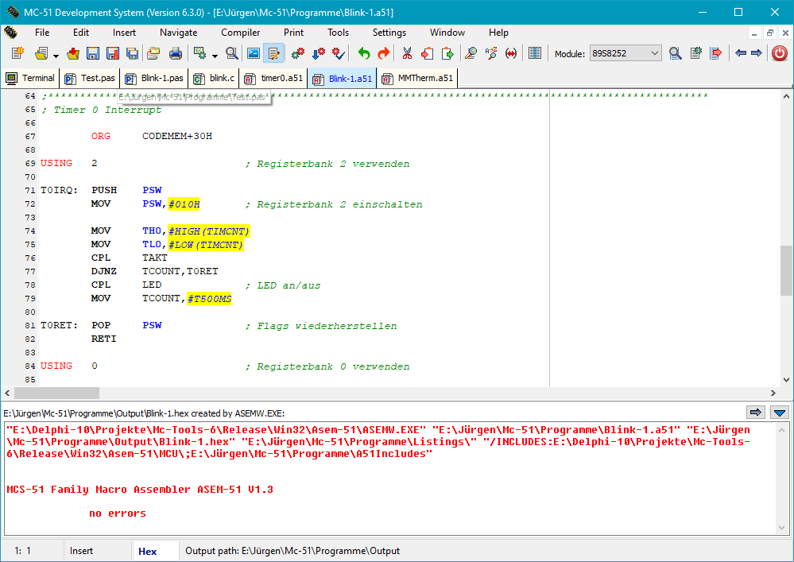
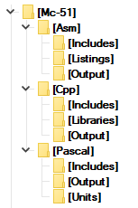
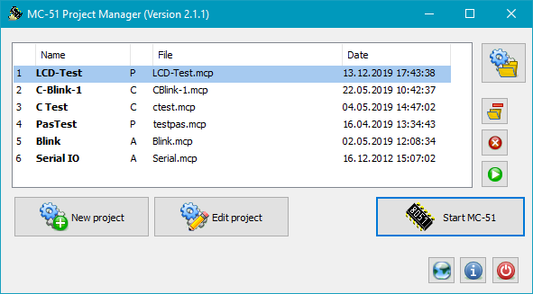

MC-Tools Version 6.3 |
|
| © 2004 - 2021, J. Rathlev, 24222 Schwentinental, Germany |
MC-Tools is a program package running on all current Windows platforms to create applications for the 8051 family of microcontrollers (Siemens, Philips, Atmel, etc.). It contains an Integrated Development Environment (IDE) to edit and compile the source code, a simulator to debug the programs on the PC, a project management and utility programs for flash programming.

The compilers ASEMW, Turbo51 and SDCC are command line-controlled programs. To compile sources, these programs must be called with adequate parameters. MC-51 will do this for you automatically just by one click. The output (especially possible error messages) is displayed in the bottom part of the desktop window. Clicking on an error message will move the editor cursor directly to the line containing the error.
As there are many controllers in the 8051 family that differ in the structure of special function registers (SFR), you have to embed the appropriate modul by using an include (Assembler and C) or a uses statement (Pascal) in your source code. The MC-Tools package contains modules and units for all common microcontrollers of the 8051 family. When creating a new source file, the program will automatically insert the code into the text that is needed for the selected microcontroller type (see top right in the toolbar). On the other hand, when loading a source file from disk, the module used is recognized automatically.
To communicate with a microcontroller experimentation board via the serial interface, MC-51
provides a terminal mode. The required parameters for the connection can be
adjusted using the main menu.
In terminal mode the screen is split into two windows: data received from
serial interface (upper part) and data to be sent to the microcontroller (lower
part). If there is a monitor program such as
PAULMON
installed on the microcontroller,
hex files created by the assembler, the Pascal or C compiler can be downloaded
into the microcontroller memory.
The simulator and debugger of MC-51 allows
small programs to be tested without any external hardware. It
contains all common debugging features (Run, Stop, Single step, Step over subroutine,
Run to selected line). You can execute the program step-by-step
or set breakpoints anywhere in the program.
The simulator displays the source code with program labels as well as the compiled
hex code and the program addresses.
All registers and memory locations can be inspected and changed if desired.
Numbers may be displayed as hex, decimal or binary values.
The port connections are displayed as SFRs and as buttons with an LED-like status
display. Changing a bit is made simply by clicking one of these buttons (only
possible when set as an input in the program to be tested).
Furthermore, two timers and the serial port (output as displayed text and input from
keyboard) are simulated. Interrupt controlling of these devices is
possible. The two external interrupts can be triggered by dedicated buttons
using mouse clicks. Controlling the priority of interrupts is not implemented.
Additionally the symbol and opcode tables of derivated family members can be loaded
directly.
Furthermore MC-51 contains a module for flash programming some Atmel microcontrollers (AT89S51/52 and AT89S8252/8253) using the serial interface. How to connect the serial port to the microcontroller can be taken from the description of the experimentation board (German).
The integrated text editor uses components from the open source project SynEdit. In addition to many extended editor functions, SynEdit supports syntax specific highlighting of source code. Most of these features can be individually adjusted by the user.

With version 6.3 it is possible to use a new structure of source directories.
Sources associated to the different supported compilers and their includes, units resp. libraries
and outputs will be stored in separate directories (see figure at the left).
After a new installation, this new structure will automatically be created on starting
the program for the first time, in case of an update, the existing structure from the
previous version will be retained. Changing to the new structure can be performed by
calling the menu item Settings ⇒ Root folder for sources ...
After selection of a new root directory, the new subdirectory structure shown at the left
will be created.
Already existing sources created under the previous version must be manually copied
to the new folders. From inside the program, this can also be performed by using the
function Save as ...

To make the software development more efficient, moving frequently-used program parts into separate modules (include files for Assembler and C, units for Pascal) is recommended. MC-51 can save all files belonging to a software project (main file and modules) and the optionally required compiler options into a project file (see more). Starting MC-51 with such a project file specified in the cammand line, Opening a project, will load all files and settings automatically to the IDE.
The provided package contains all programs described above, the
Pascal-Compiler Turbo-51 (Vers. 0.1.3.17),
the Assembler ASEM-51 by
W.W. Heinz,
as well as the include modules and units for many of the 8051 family microcontrollers.
The C compiler SDCC must be
downloaded
and installed separately. On start ing, MC51 will check if SDCC is
installed on your system and will integrate it automatically into the IDE.
To install the program, run the provided Windows setup file (mc-setup-6.x.yy.exe, where x.yy represents the applicable version). To do this, administrator rights are required under Windows 7, 8 nd 10. You can install the program into any folder on your system (default: C:\Program Files\Mc-Tools on 32-bit systems, resp. C:\Program Files(x86)\Mc-Tools on 64-bit systems). Optionally, shortcuts can be created in the Windows start menu and on the desktop.
The following directory and file structure is created beneath the installation folder:
<Install directory>
mc51.exe Program
mc51.ini Default settings for the program
mc51.key Keyboard settings for the integrated editor
mc51-asm.hlt Preferences for syntax highlighting (Assembler)
mc51-pas.hlt Preferences for syntax highlighting (Pascal)
mc51-cco.hlt Preferences for syntax highlighting (C compiler))
opcodes.mco List of 8051 opcodes for simulator
8051.mcu List of basic symbols for simulator
mcprojects.exe Project manager
checkisp.exe Program for checking a flash programmable Atmel microcontroller (e.g. AT89S8253)
diffisp.exe Program for checking for differences of flashed programs
<locale> Language specific files for MC-Tools (current: German)
<Asem-51> Directory for Assembler
AsemW.exe Assembler for use under Windows
... A few other programs and documentation
<Mcu> Directory for include modules (see above)
*.mcu Include modules for the different microcontrollers
<Turbo-51> Directory for Pascal
<bin> Pascal compiler
<rtl> Runtime libraries
<manual> Documentation
<Units> Directory of system units
Sys_*.pas Units for the different microcontrollers
On starting MC-51 (MC51.EXE) the first time, all necessary settings (location of Assembler, Pascal and C compiler, etc.) will be carried out automatically by the program.
If an experimentation board is connected to the computer,
the serial port used must be selected prior to the first operation:
Depending on which monitor program you are using, a few more settings are required:
If you are using PAULMON as monitor program, you can leave all settings at their
default values (9600 baud, 0 ms and 50 ms). After powering up the experimentation
board with this monitor implemented, the enter key within the terminal window must
be pressed to cause the microcontroller to set itself to the chosen baud rate.